ECKEN ZUR FONT
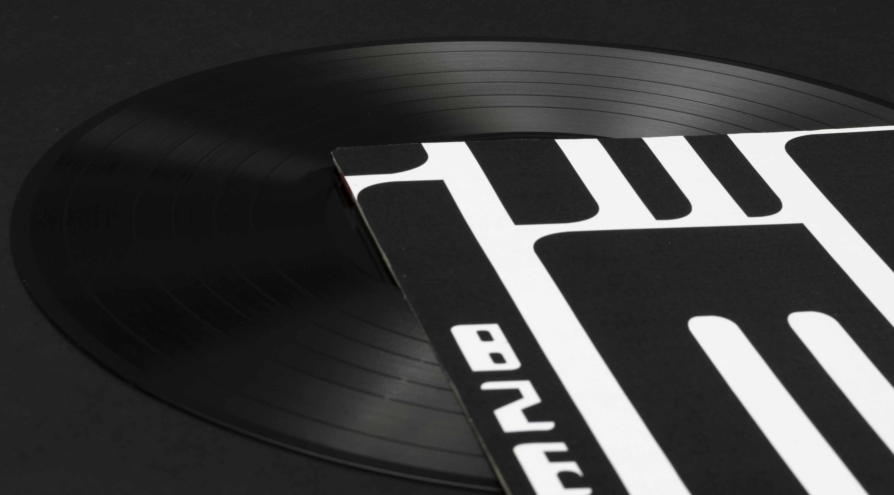
Technik begleitet uns täglich, doch ihr Inneres bleibt meist verborgen. Dieses Teilprojekt blickt hinter die glatte Oberfläche alltäglicher Geräte. iPod, Kopfhörer und Ladekabel wurden dekonstruiert, analysiert und anschliessend mit Adobe Illustrator neu interpretiert. So entstanden klare, präzise Illustrationen, die Technik als ästhetisches Phänomen sichtbar machen. Gleichzeitig lernt man die Grundkenntnisse von Adobe Illustrator: den Umgang mit Formen, Farben und Werkzeugen. Gestaltung wird hier zur Entdeckung der Schönheit des Mechanischen: klar, präzise und dennoch überraschend lebendig.
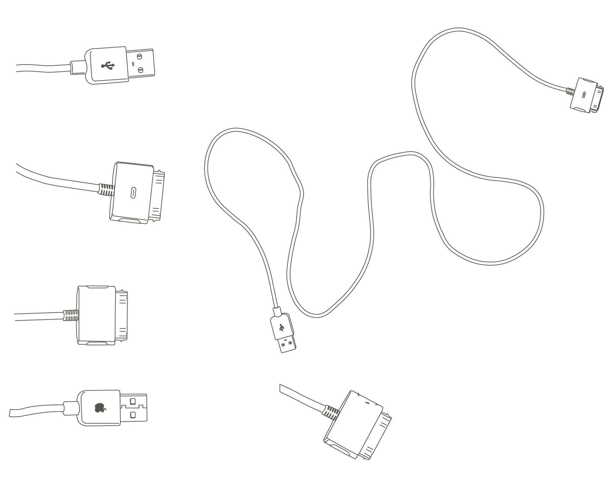
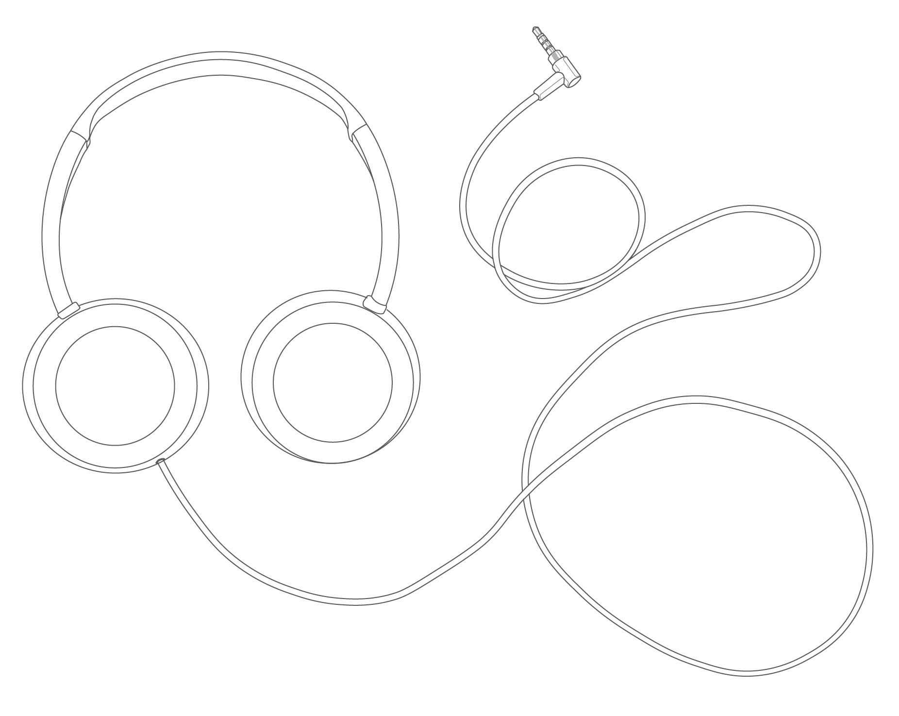
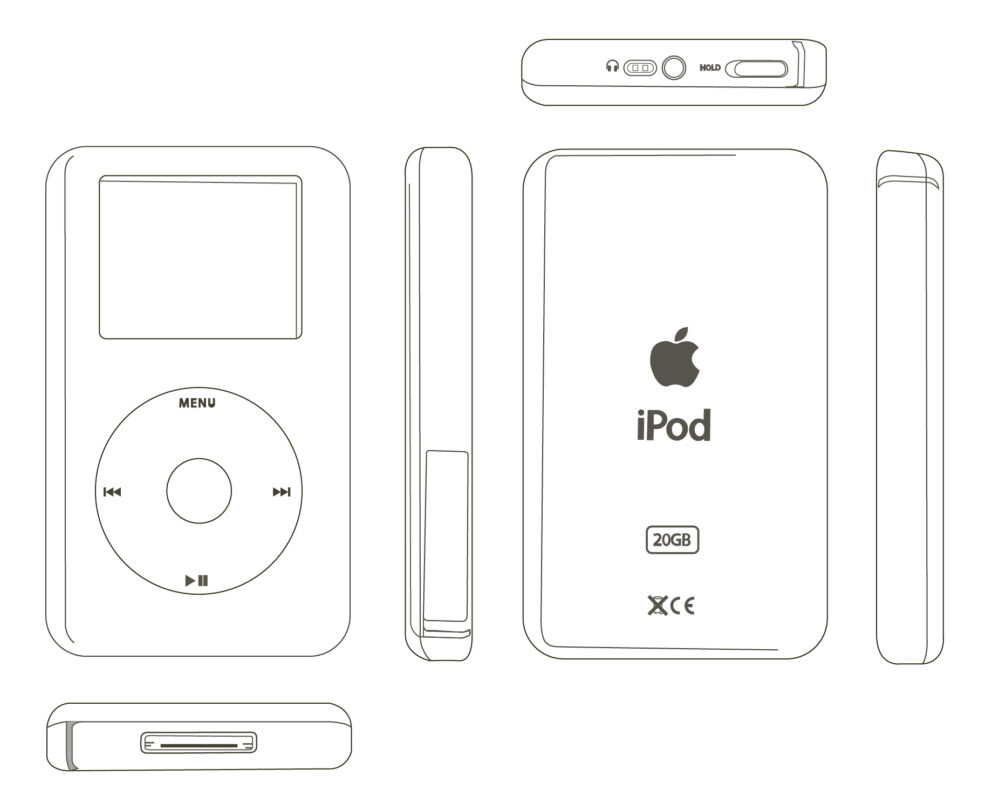
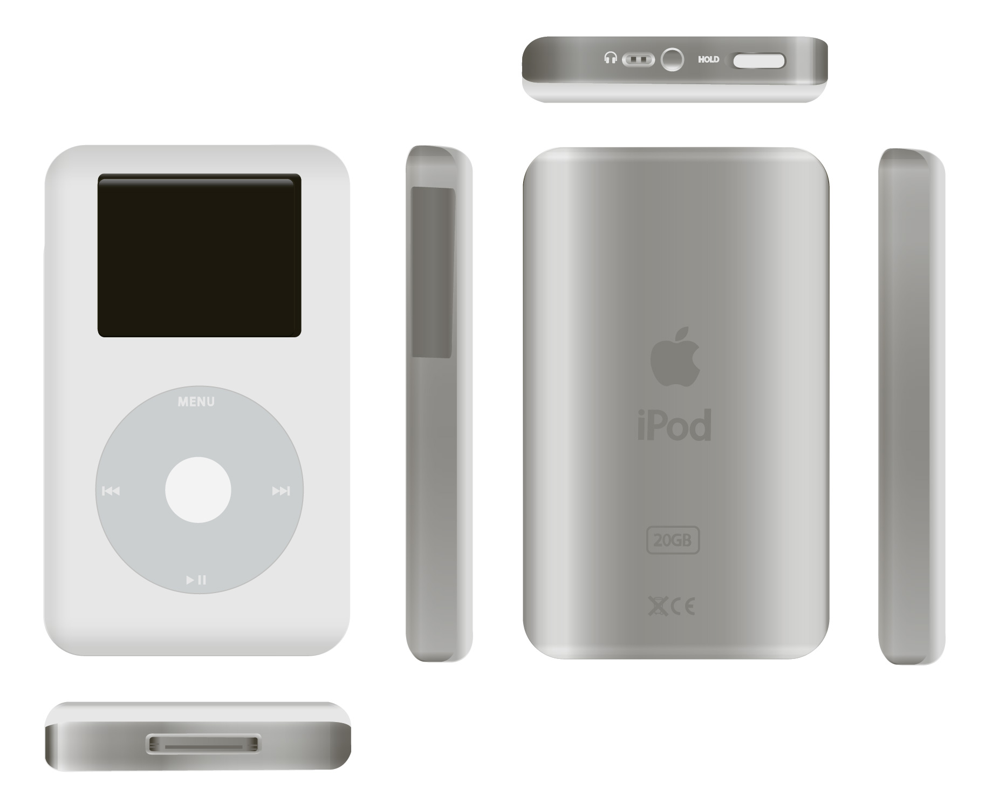
Auf dieser Grundlage untersucht das zweite Teilprojekt, wie sich Musik typografisch übersetzen lässt. Ausgehend vom Stück «Impro Bzez» entstand eine typografische Komposition, die Rhythmus und Bewegung in Linien und Formen überträgt. Das Material wurde in Adobe Illustrator zerlegt und zu einer experimentellen Schrift neu zusammengesetzt. Diese Schrift findet ihren Ausdruck auf einem Plattencover, das Klang visuell erlebbar macht. Anschliessend wurde sie weiterentwickelt und erhielt eine neue, kraftvolle Variante – wie ein zweiter Ton im typografischen Akkord.
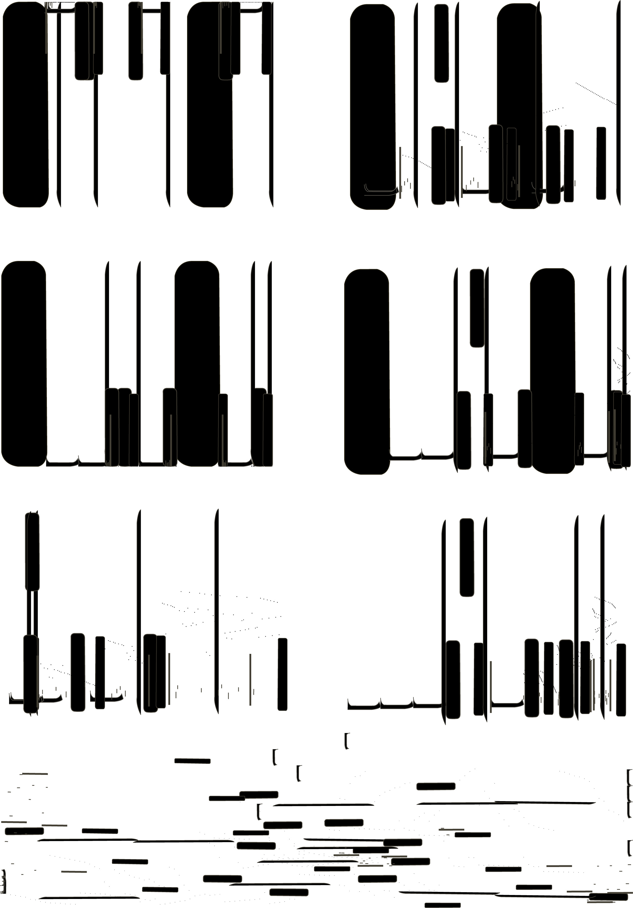
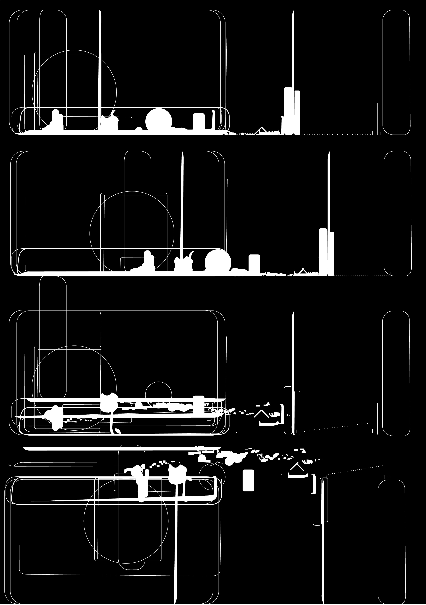
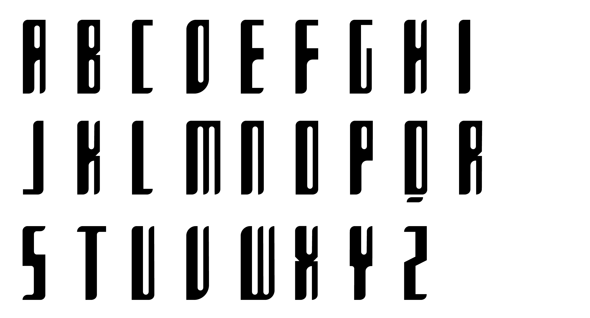
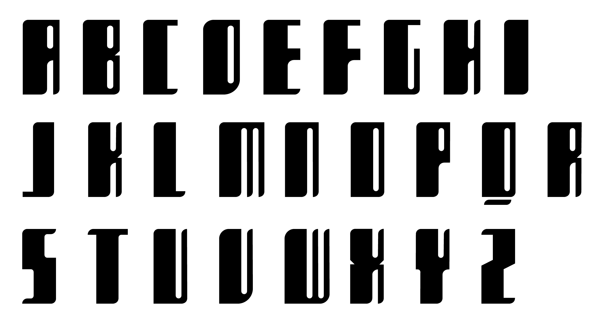
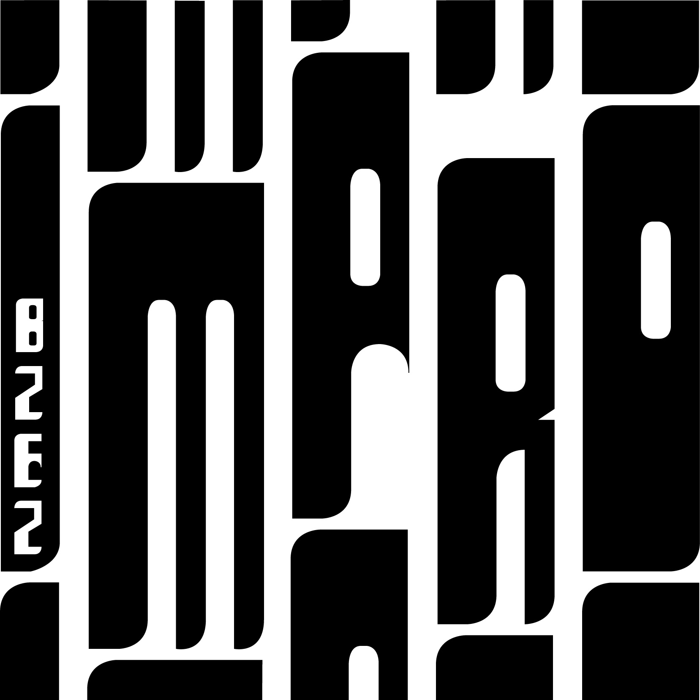
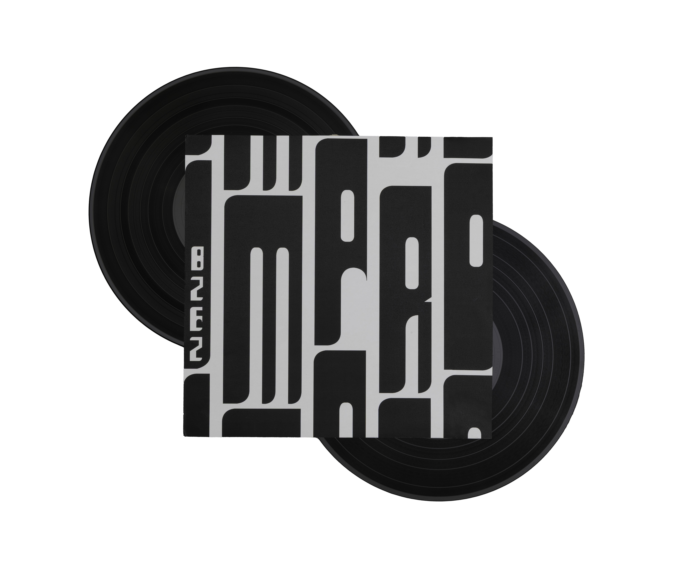
Technische Zeichnung
Font design
Februar 2024